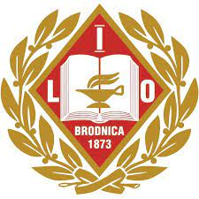

Witaj! czy chciałbyś dołączyć do nas?
|
|
|
Plan promocyjny |
Dlaczego my? Wiemy, że każdy z Was jest inny, ma inne zdolności, zainteresowania i ambicje, dlatego rozważcie składaną przez nas propozycję. Nauczyciele pracujący w I LO mają dużą wiedzę i długoletnie doświadczenie, są otwarci i życzliwi, gotowi pomóc w każdej sytuacji, potrafią dostrzec Wasze trudności i docenić Wasze starania. Służą Wam pomocą w rozwijaniu waszych zainteresowań i pasji oraz osiąganiu życiowych celów. Starają się zapewnić atmosferę bezpieczeństwa, życzliwości i akceptacji. W naszej szkole wszyscy się znają i otaczają wzajemnym szacunkiem. Każdy uczeń ma prawo głosu, każdy może swobodnie wyrażać swoje poglądy, każdy ma szanse wykazać się swoimi zdolnościami, dlatego każdego traktujemy indywidualnie.
Dlaczego warto iść do I LO:
-jesteśmy szkołą dla ucznia, a nie molochem edukacyjnym -u nas jesteś traktowany podmiotowo i życzliwie -słyniemy z indywidualnego podejścia do ucznia -pracujemy tak, aby każdy mógł osiągnąć sukces na miarę swoich możliwości i ambicji -jeśli masz trudną sytuacją osobistą związaną z niepełnosprawnością, przewlekłą chorobą lub innymi problemami, otoczymy Cię szczególną opieką -stwarzamy takie warunki do nauki, aby każdy uczeń zdał maturę -zapewniamy niepowtarzalny klimat, serdeczną atmosferę, radość i dużo humoru -tworzymy wspólnotę ludzi zaprzyjaźnionych i związanych ze sobą zajęcia z wychowania fizycznego odbywają się w nowocześnie wyposażonej hali sportowe, siłowni i sali fitness -wieczorami możesz uczestniczyć w obserwacji nieba w astro-bazie znajdującej się na terenie naszej szkoły -dajemy Ci możliwość zaprezentowania swoich umiejętności aktorskich na nowej scenie teatralnej -języka obcego nauczymy Cię w laboratorium językowym -Ty możesz decydować o tym, jaka będzie Twoja szkoła, działając w Samorządzie Uczniowskim Film promocyjny poniżej ↓
Zabierzmy cię w podróż do naszej szkoły💪  |
W razie pomocy prosimy:
●dzwonić na numer 0-56 4982016
Potrzebujemy cię!
wszelkie prawa zastrzeżone